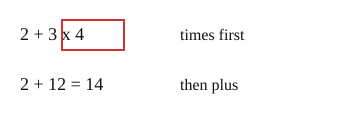

Part of Order of Operations. Answer in the chat (1: ..., g: c), add sure or guess after any answer, and say done when finished.
Last time: what is 2 + 3 x 4? You said a) 20. It is b) 14.

One expression should mean one number to everyone, so there is a fixed order. Multiply and divide go before add and subtract (notes 2). In 2 + 3 x 4, the x 4 belongs to the 3 only.
Q1. What is 10 - 2 x 3?
4 (sure)
Right: 2 x 3 = 6 first, then 10 - 6 = 4 (notes 2).
Q2. In your own words: why is 5 + 2 x 3 not 21?
the x 3 only belongs to the 2, so you do 2 x 3 = 6 first and then add 5, which is 11
Right: the times binds to the 2 alone (notes 2).
Q3. Lu says 20 - 12 / 4 = 2, working from the left. What is wrong?
divide comes before subtract, so 12 / 4 = 3 first, then 20 - 3 = 17 (sure)
Right: divide goes before subtract (notes 2).
You can now do x and / before + and -.
What is 12 / 3 x 2?
c (guess)